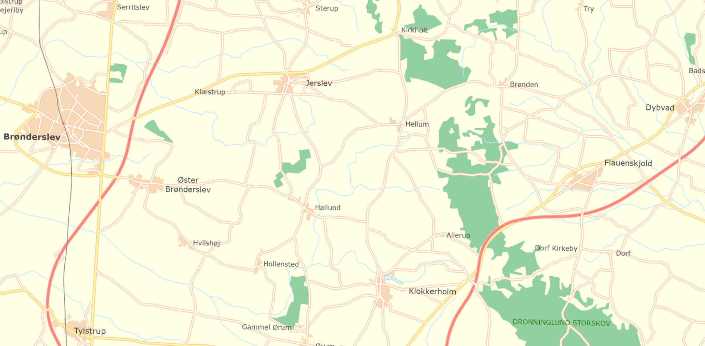

Eight generations from Søren Jensen of Fredenborg, documented in the Jerslev register in 1698 and 1702, to Jens Kristian Marinus Thomsen Bøgh, born at Klæstrup in 1903. The whole line lived within a 25 km stretch of central Vendsyssel, and after two centuries it came back to the parish it started in. This page companions Finding Fredenborg, which locates the house where it begins.

Pins are placed on the parish church for births and deaths recorded only by parish, and on the house or hamlet where the record names one (Fredenborg, Klæstrup). Hover a pin for the people and dates behind it. Basemap: Danmarks Topografiske Kortværk, skærmkort (Klimadatastyrelsen, open data). Frame 57.190–57.315 N, 9.900–10.370 E.
| # | Name | Born | Died | Record and notes | Status |
|---|---|---|---|---|---|
| 1 | Søren Jensen | c. 1660s? Fredenborg, Svennum | after 1702 Fredenborg, Svennum | Named “Sørens udj Fredenborg” at Christen’s baptism, 13 Feb 1698, and in full as “Søren Jensen Fredenborg” at the baptism of a son Jens, 10 Sep 1702 (Jerslev kirkebog). Birth year unknown; no record read gives his age or parents. He is not one of the Andersen brothers who held the house in 1676–1699 and probably came into it by marriage. | Documented 1698–1702. Birth and death open. |
| 2 | Christen Sørensen | 13 Feb 1698 Fredenborg, Svennum | 20 Feb 1746 (reported) Fredenborg, Svennum | Baptised Jerslev 13 Feb 1698, godparents Knud Kampmann of Kølskegård, Kield Andersøn, Lars Nielsen, the priest’s wife Marie Fischer and Dorthe Jensdatter. Death at Fredenborg on 20 Feb 1746 is as reported in the family record and not yet checked against the Jerslev burials; if confirmed it shows the house name still in use in 1746. | Baptism documented. Death to verify. |
| 3 | Peder Sørensen | 1724 Vester Brønderslev kirke | — | As given in the family record. Note the patronymic: a son of Christen Sørensen would be Peder Christensen. Either the index has the wrong father, or this Peder is Christen’s brother. A Peder Sørensen of Svennum, 49, was buried at Jerslev on 17 Mar 1720, so a 1724 child named Peder could be an honorific for him. Vester Brønderslev was the second church of the Jerslev pastorate until 1859. | Weakest link. Check the 1724 baptism image. |
| 4 | Simon Pedersen | c. 1774 Hellevad parish (as reported) | 25 Jul 1853 Skæve parish | Gaardmand (farmer) at Lille Nejsum, Skæve parish. The 1834 census lists him there, 60, married, with wife Ane Thomasdatter, 48, and children Thomas 20, Mette 16, Christen 14 and Inger 9, plus a servant. The 1814 baptism of Thomas names him “Gaardmand Simon Pedersen og hustru Ane Thomasdatter i Lille Neisum”. Married three times in four years: Mette Hansdatter 1810 (she died March 1812), Maren Larsdatter Nov 1812 (she died 19 Jul 1813, the day a daughter was born), Ane Thomasdatter 23 Jul 1813. Baptism in Hellevad not yet seen. | Documented 1814, 1834. Birth to verify. |
| 5 | Thomas Simonsen | 16 Dec 1814 Lille Nejsum, Skæve parish | 5 Dec 1898 Skæve parish | Born 16 Dec 1814, baptised at home 17 Dec, brought to Skæve church 15 Jan 1815; mother churched 12 Feb. Godparents: farmer Jørgen Pedersen of Store Nejsum, Laurs Jensen of Stagsted, farmhand Otto Christensen of Lille Nejsum, farmer’s wife Ane Jensdatter of Kraverbede, and the girl Inger Christensdatter of Lille Nejsum. In the 1834 census, 20, at home. Named Thomas for his maternal grandfather, Ane Thomasdatter’s father. | Documented. |
| 6 | Christen (Kresten) Thomsen | 7 Aug 1850 Skæve kirke | — | As given. | From family record. |
| 7 | Jens Kristian Severin Thomsen Bøgh | 22 Apr 1876 Klæstrup | — | As given. Klæstrup is a hamlet in Jerslev parish, 2 km west of the church and 4 km west of Fredenborg: the family is back in the parish it left two centuries earlier. The name Bøgh is a farm name or byname taken as a surname, as the 1828 and 1856 naming laws encouraged. | From family record. |
| 8 | Jens Kristian Marinus Thomsen Bøgh | 1903 Klæstrup | — | As given. | From family record. |
Five moves in eight generations, all short, all within the same group of neighbouring parishes. Total distance about 56 km over two hundred years.
Each step is to an adjoining parish, which is what a family of cottagers and smallholders in this period typically did: marriages, leases and farm service were found within walking distance, and a move of one parish was a big one. The return to Klæstrup in 1876 closes a loop. Klæstrup lies 4 km west of Fredenborg, in the same village fields that Anders of Fredenborg was harvesting in 1676.
Generations 1–2 from the Jerslev parish register (Rigsarkivet; images via Danish Family Search, sogn 359), read in Finding Fredenborg. Generations 3–8 as given in the family record supplied by the researcher, October 2026; not yet checked against the register images, except where noted. Church coordinates from OpenStreetMap. Basemap and the Fredenborg site from Klimadatastyrelsen open data.